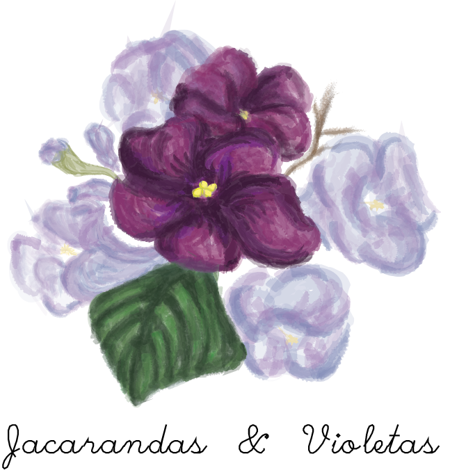

Trayectoria y Cartografía · 2024 – 2026
El camino recorrido por Zorros y Nahuales en espacios comunitarios, recintos culturales y encuentros de artes vivas. Toca cada emblema en el mapa para desplegar su memoria.

En colaboración con Colectiva Jacarandas y Violetas